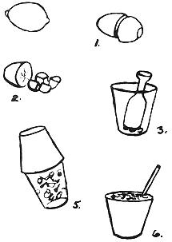

It's not hard to organize a commune, "tribe", "family" or loose coop these days. Everyone - it seems - knows o f, has lived in or has eyes for some such federation.
Bread, to finance the venture, is another matter. Usually, nobody - but nobody - has any money or any idea of a groovy way to get the loot to convert the bus or buy the land or do all the other things so dear to the heart of the average communard.
And don't start giving me that rap about "Comes the Revolution, we won't need money" because I've heard it all before. This is still before the Revolution, brother, and even the Berkeley TRIBE needs rent money. I don't see Abby Hoffman or Jerry Rubin turning down those heavy speaking fees and book royalties:
So, OK. Wouldn't it be great if there was only some way for the whole "family" to work together . . . when and where they chose . . . for as long as they wanted . . . in a fun atmosphere . . . while doing a good ole-timey downhome gig . . . and still make some heavy bread . . . with almost no investment?
Well, interestingly enough, I noted just such an operation last summer . . . not once, not twice . . . but three times. In every case (including-and most especially-the one operated by gentle freaks), it was doing a land office business. What is it? A lemonade stand.
Yeah, I know. That brings to mind a vision of little kids on the front lawn. Believe me, this is an entirely different proposition.
I saw the first of the three stands last summer at the Experimental Aircraft Association Fly-In at Rockford, Illinois. It was run by a real family: Grandpa down to belt-high grandson. They were selling a 12 oz. cup of fresh-squeezed lemonade for 25- cents from an obviously home-made stand . . . and they were selling a lot of those cups, too. Their establishment had windows on two sides and it was quite common to stand in line five minutes waiting to be served.
There's a little Lake Erie resort town in Ohio called Geneva-On-TheLake and that's where I saw the second stand. It was a permanent circular stucco resort town monstrosity and the customers in front were lined up three deep.
The third stand was a "grab" tent pitched under a shade tree outside a display barn at the Great Geauga Co. Fair in Ohio. This was the one run by the freaks: Several teenage kids of various colors and dress and one bearded guy in his early 20's. There was 4-6 people in the tent all afternoon and they were selling 16 oz. cups of made-while-you-wait lemonade for 35- cents each as fast as they could serve them.
I'm sure there must be a number of similar lemonade stands scattered around the country, I'm sure they're all doing as well in the summer and I'm sure there's room for many more.
All three of the stands I saw used the same gimmick: A tangy, fresh glass of lemonade individually and personally made right in front of the customer's eyes. Get the picture? None of this premixed, pour-it-out-of-a-jug stuff.
The really interesting thing to me was the fact that SnoKone and other refreshment stands at the fair were doing only a so-so business while the Fabulous Furry Freaks were serving up a storm of lemonade.
Why? Well, I can't answer for all the other folks who were plunking down their thirty-five-cent pieces, but I know why I bought a couple of shots of lemonade: (1) It was good and tangy and thirst-quenching whereas most of the prepared colas and other plastic drinks were (bleah!) sticky sweet, (2) There was no question about it . . .the lemonade was made fresh right in front of my eyes and (3) That cutting and mixing and shaking was downright fascinating compared to the bored pushing of a tap at the other booths.
There is no secret formula to making lemonade the way these kids were doing it:
(1) The bearded fellow sliced both nub ends off a lemon and cut it in half.
(2) He took one half of the lemon and quartered it. (The other half is then quartered for a second glass.
(3) The quartered half a lemon was then put in a heavy 16 oz. glass (it looked like a laboratory beaker) and mashed with a wooden pestle or cut-off potato masher. The Rockford family used a metal container from a drugstore milkshake maker and a small hand lemon squeezer).
(4) The glass was next handed to one of the kids who ladled in about a quarter cup of sugar and 8 oz. of ice. The glass was filled brim full of water.
(5) A 16 oz. paper cup was then placed upside-down over the glass and the whole thing shaken vigorously for 15-20 seconds.
(6) The glass-cup assembly was inverted and the brimming cup of icy lemonade handed to the customer.
I priced this operation out the other day and I found that fresh lemons are available from wholesalers in cases of 120-140. Each case costs, in the Cleveland area, about $6.00. This means that an individual lemon runs 4.3 to 5- cents each and-since one lemon makes two servings - the lemon for each cup will cost you about 2.5 cents.
The sugar will run about a 1/2-cent a serving. As will the ice. The cup costs two cents and the water will be included in the price of your location rental. Raw materials for a 35-cent cup of lemonade, then, cost you about 5.5 cents.
A typical fair or carnival will charge you 12% to 30% of your gross for allowing you to set up your "grab". And you'll have to write off the capital expense of your tent and figure in transportation costs and other miscellaneous expenses.
Actually, the tent isn't that big a problem. I checked three suppliers that specialize in carnival tops and found old but serviceable 10 x 14 tents complete with side wall, bag, poles and stakes for as little as $25.00 complete. A brand new tent of the same size can go as high as $200.00. Here, if you're interested, are the names and addresses
Garber Canvas Products Co.
P.O. Box 36 74
Hollywood, Florida 33023
Mankato Tent & Awning Co.
1021 Range St.
Mankato, Minn. 56001
Mason City Tent & Awning Co.
Mason City, Iowa 50401
Transportation shouldn't be a big problem, either. If you can haul the gang around, a few supplies and a tent should fit in somewhere.
OK. How do you get booked? Well, if I were to give this a try (and I may), I'd write or call the chairman of every EAA and other fly-in (since I'm a home-built airplane nut) and arrange for space at every possible meet. Then I'd travel from one to another all summer. If you're an old car enthusiast or dig muzzle-loading guns or want an excuse to tour all the antique swap meets or whatever, you can do the same thing in almost any field.
To go the carnival route, your best bet is to subscribe to Amusement Business Magazine, 2160 Patterson St., Cincinnati, Ohio 45214. Each issue of this weekly publication has pages of ads soliciting stands for various fairs and AB puts out some special issues that are even more helpful.
There's other possibilities, of course: Making a deal to set up in a shopping center parking lot, for instance, or a city park on weekends or at rock festivals, etc.
But is it worth it? If you're in it for the money, judging from what I saw last summer, your tribe might gross as much as $400-$500 a day in a good location. Maybe more. After all expenses, you might net $150 to $200. A few good weekends can make the down payment on that farm! Not bad on, say, a $50.00 investment.
And will you be doing a good thing? Well, since most refreshments now served are pre-fabbed plastic and since your product is definitely fresh and as authentically "old time" as a porch swing . . . yes, of course, you'll be doing a good thing. And, since you'll be working and sticky to your elbows before the day is over, you most certainly won't be ripping anyone off. You'll earn your money.
Of course, if you're on the wholesome foods trip, you may object to selling that much white sugar. If so, forget it.
The really beautiful part of the whole deal, of course, is being able to wrap up travel, pleasant work with the people you dig and a fair return on your time and investment all in one bag while you strike a small blow against the pre-packaged world.
If you decide to give it a whirl, line up the lemons from a good wholesaler, sugar from a grocery broker or wholesaler and ice from whatever source (ice company, grocery store or gas station or your own machine) is cheapest. The cups are handled by any good paper wholesaler or you can get them from Gold Medal Products Co., 1825 Freeman Ave., Cincinnati, Ohio 45214.
Needless to say, make a trial run or two to make sure you have your system down pat . . . and keep your stand clean and neat. Let me know how you do. - JS
|
 |
|
|